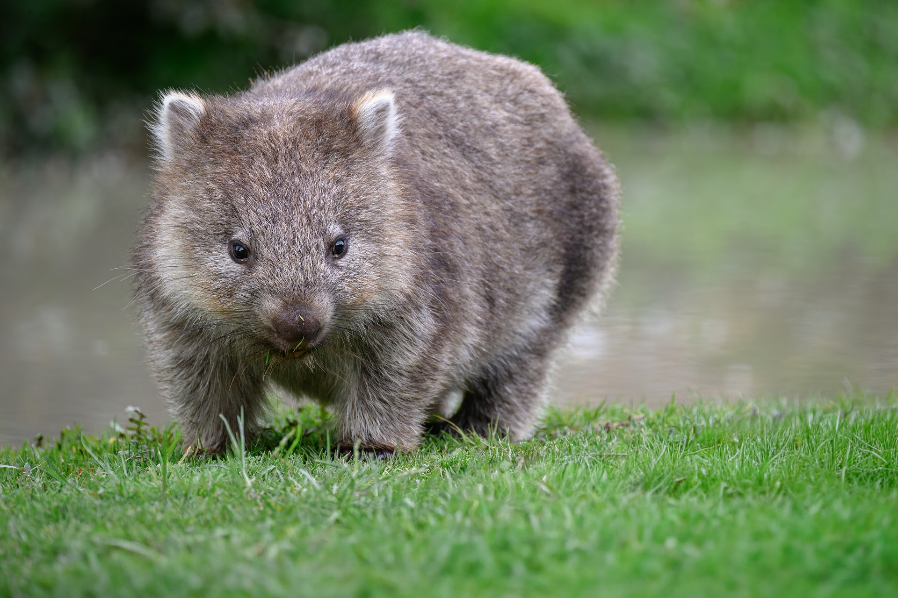

2-Cuerpo robusto: Tiene un cuerpo fuerte, patas cortas y garras muy poderosas para cavar.
3-Excavador experto: Construye madrigueras largas y complejas bajo tierra donde vive y se protege.
4-Herbívoro: Se alimenta principalmente de hierbas, raíces y corteza de plantas.
5-Actividad nocturna: Generalmente sale por la noche a buscar alimento y descansa durante el día.